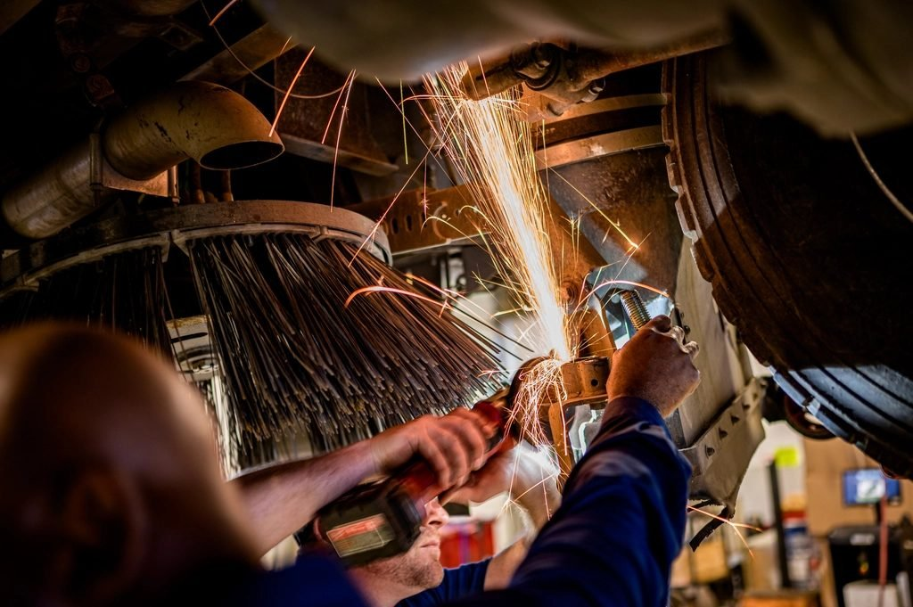

General arrangement
- Duty class M3 to M8 to IS 3177
- Wheel loads issued for your gantry girder
- Approval drawing before fabrication

Rockwell Hoisto Cranes / Bahadurgarh
Plate comes in at one end of the shed and a tested crane goes out of the other. This is what happens in between.
Our own works
Our own works
Every girder on every crane we have supplied was cut, welded, machined and assembled at Plot 14, Sector 16, HSIIDC Bahadurgarh — by our own people, on our own plant, under our own drawings.
That matters when something is non-standard. A barrage gantry with out-of-log lifting, a crane that has to fit a building that was never designed for one, a replacement girder for a machine somebody else built in 1994 — all of it is the same shop, the same welders and the same inspection.

Station by station
Plant & capability
Inspection & testing
From time to time our equipment is inspected and passed by third party agencies, at the customer's instruction or ours.
Camber, sweep and deflection are measured against the design figure at the stages where they can still be corrected.
Every machine is loaded beyond its rating before it leaves, with the test certificates issued against it.
Long seams run to procedure by welders who have been doing this work on this floor for years.
Against defect in material and workmanship, from the date of commissioning.